Kyrgyz food is built for mountains: warm, generous, and deeply comforting. Think slow-cooked meat, handmade dough, rich broth, and a table that always has tea. Below is the “best of” menu — described like you’re ordering it in the best restaurant in Kyrgyzstan.
Signature dishes (the classics)
If you try only a few dishes, make them these. Each one carries a piece of nomadic history — simple ingredients, cooked with patience, served with pride.
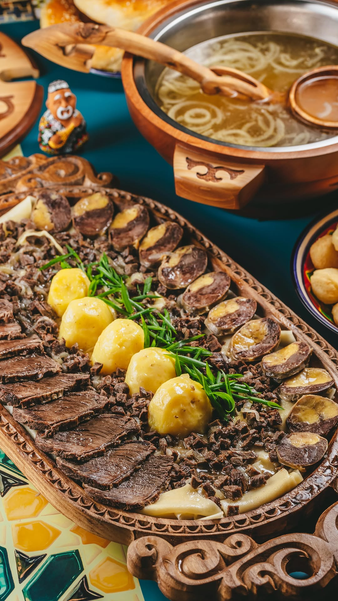
Beshbarmak
The national icon. Tender boiled meat (often lamb or beef), sliced generously, laid over soft handmade noodles. It’s finished with warm onion broth — not heavy, but silky and aromatic. Best when you eat slowly, with hot tea nearby.
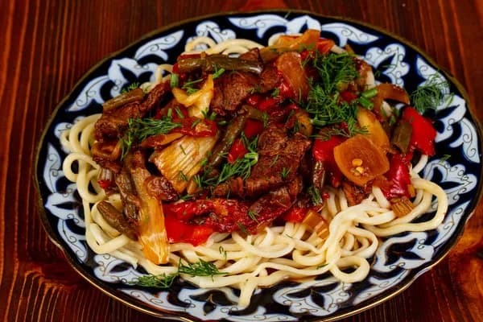
Lagman
Hand-pulled noodles with character: chewy, elastic, and satisfying. They’re dressed in a rich sauce of meat, tomatoes, peppers and garlic — the kind of dish that smells incredible before it even hits the table.
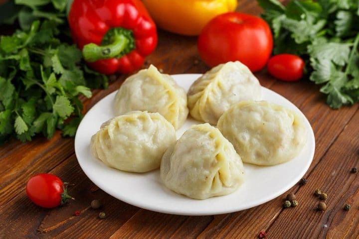
Manty
Big, steamed dumplings with juicy filling inside. The dough is thin and soft, the center is usually minced meat and onion (sometimes pumpkin). Add sour cream — and you’ll understand why people order a second plate.
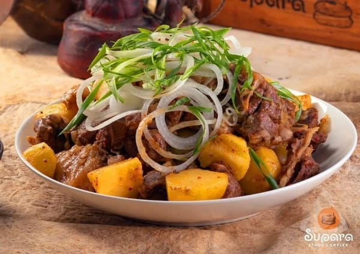
Kuurdak
The “mountain comfort” dish. Meat fried with onions until it turns deep and fragrant, often with potatoes for that extra satisfying bite. It’s bold, rustic, and perfect after a cold day outside.
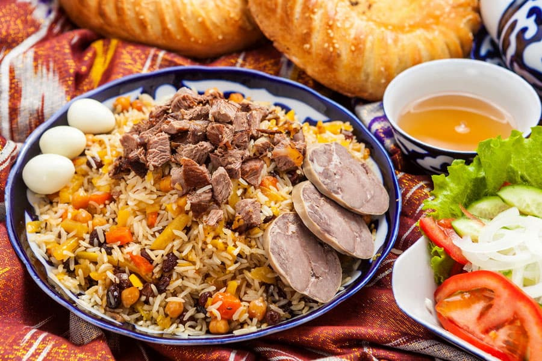
Plov
Golden rice cooked with meat, carrots and gentle spices. The rice absorbs everything — it’s warm, fragrant, and filling without being heavy. Ideal for lunch, especially before a long drive.
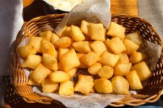
Boorsok
Little golden bites of fried dough — crispy outside, soft inside. It’s always served with tea, often with jam or honey. Simple snack, but it feels like home.
Street favorites (quick, hot, addictive)
When you’re in a bazaar or moving fast, these are the go-to options — fresh, affordable, and very “real Kyrgyzstan”.
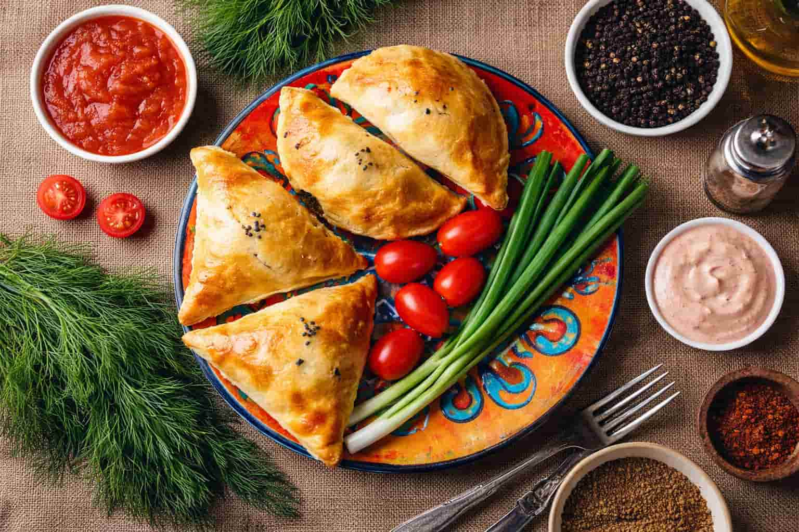
Samsa
Flaky pastry baked until the edges turn crisp. Inside: meat and onion, juicy and peppery. The best samsa has that perfect moment — crunchy bite, hot steam, and rich filling.
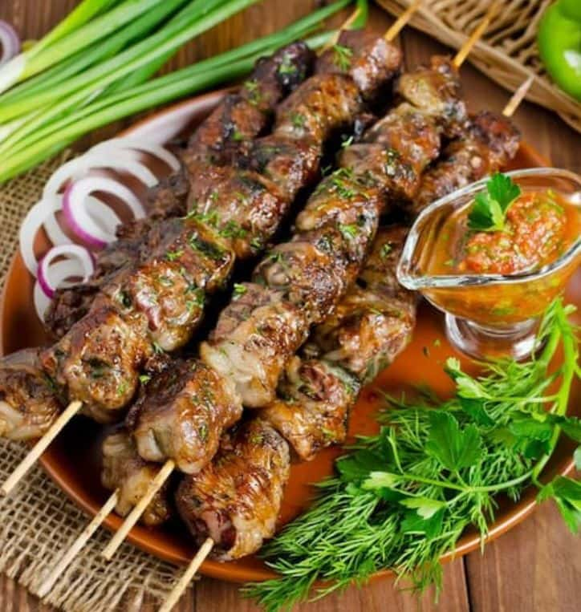
Shashlik
Grilled meat on skewers, smoky and tender. Usually served with raw onion rings and bread. Ask for it hot off the grill — that’s when it’s unbeatable.
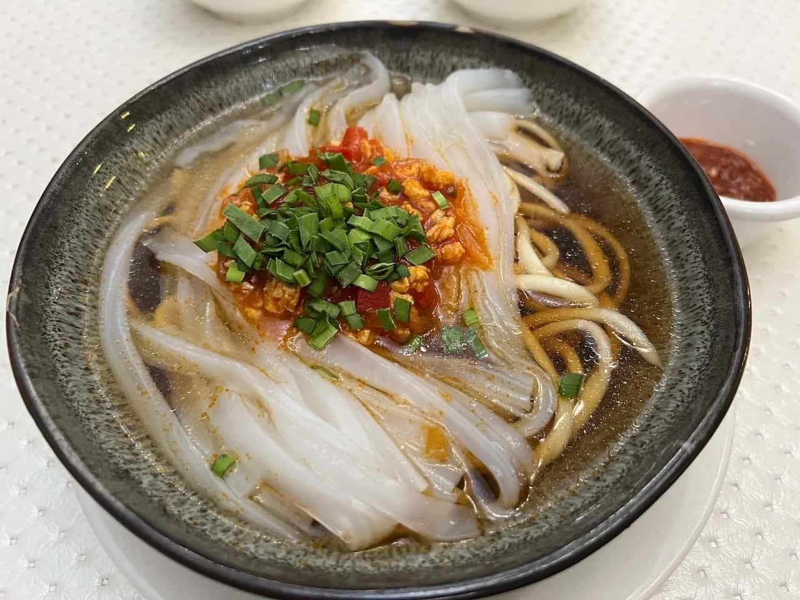
Ashlyan-fu (Karakol style)
Cold noodles with a spicy-sour kick. It’s refreshing, sharp, and perfect in warm weather. If you like bold flavors — this is your move.
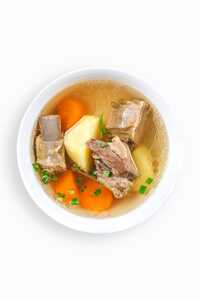
Shorpo
Clear, comforting meat broth with vegetables. No drama — just honest flavor, especially when it’s cold outside. A perfect starter before heavier dishes.
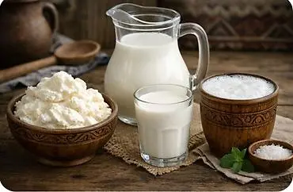
Nomad dairy: Kurut, Kumys, Chalap
These are not “just drinks” — they’re a part of life in Kyrgyzstan. Try them with an open mind, start small, and you might end up loving them.
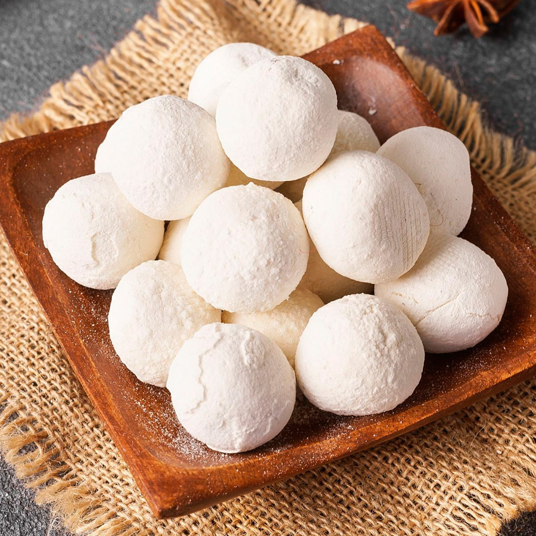
Kurut (the salty mountain snack)
Kurut is the ultimate road snack: small, hard, salty dairy balls that you slowly dissolve in your mouth. It’s made from sour-milk base (dried and salted), so the taste is sharp and intense — like “mountain electrolytes”.
Pro tip from a waiter: don’t bite it aggressively — let it melt a bit, then sip tea or water. This is how locals enjoy it while traveling.
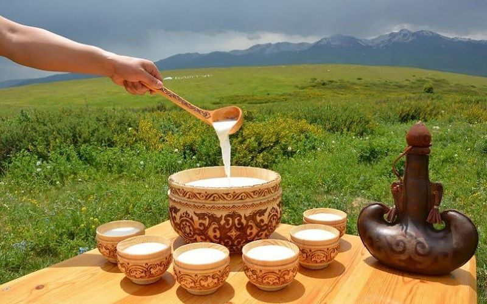
Kumys
Fermented mare’s milk — lightly fizzy, sour, and very refreshing. The flavor is strong and “alive”. Start with a few sips, then decide. In summer, it feels like the most authentic drink you can try.
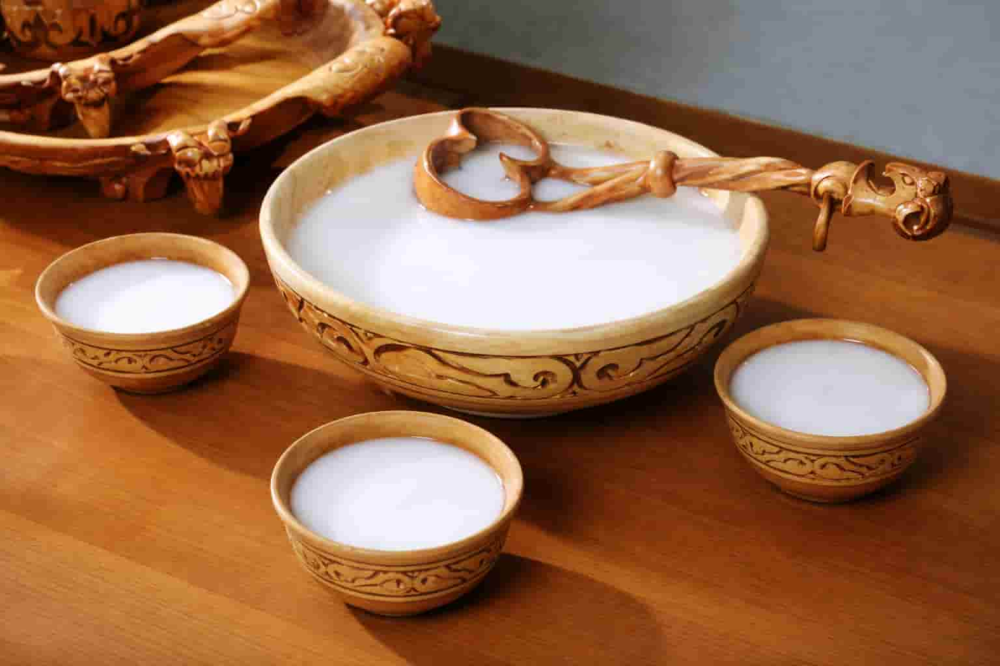
Chalap
Cold, yogurt-based drink (often slightly salty), perfect in hot weather. Think “Kyrgyz refreshment”: smooth, clean, and super drinkable. Order it when you eat something grilled or spicy.
Quick tips (order like a pro)
-
🍖
Ask what meat it isSome places serve horse meat — it’s normal here and often considered premium.
-
🥟
Don’t rush mantyThey’re hot inside — give them a minute, then add sour cream.
-
🍵
Tea is part of the mealEven with heavy dishes, tea makes everything feel lighter.
-
🥛
Start dairy smallKumys/chalap are best tried in small sips first — your body will tell you.